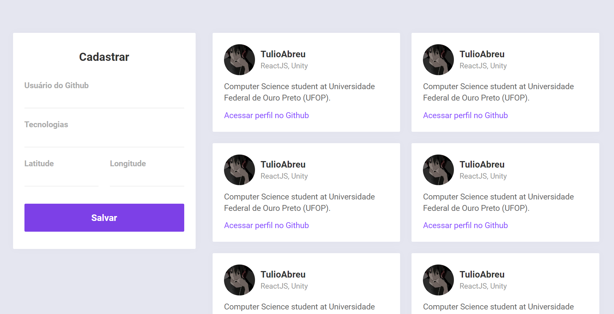
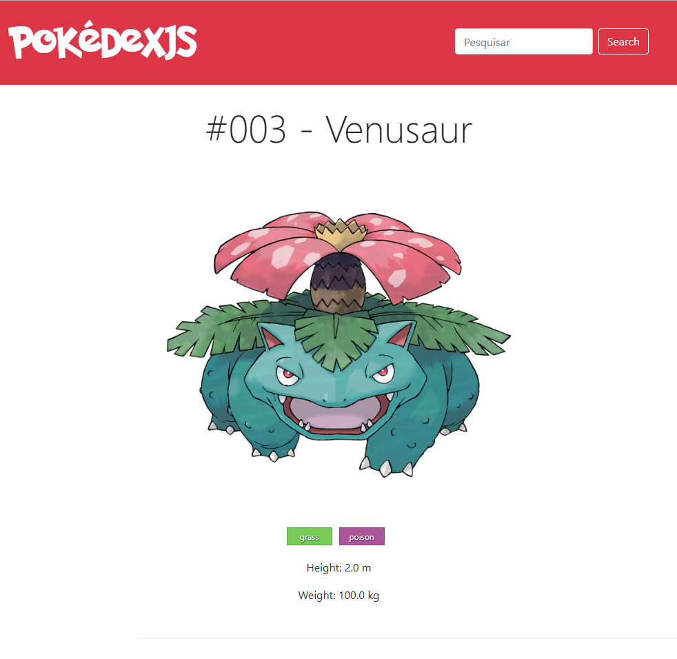
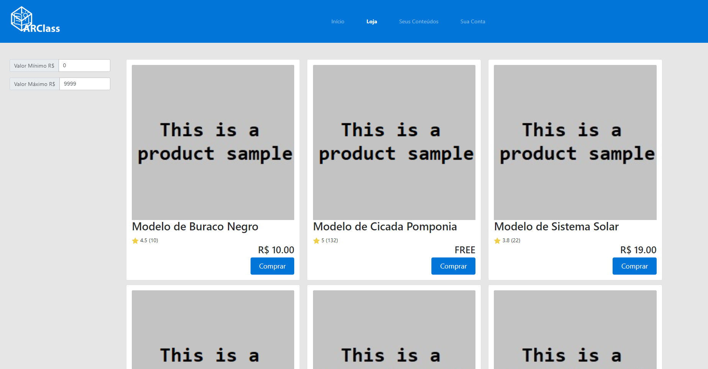
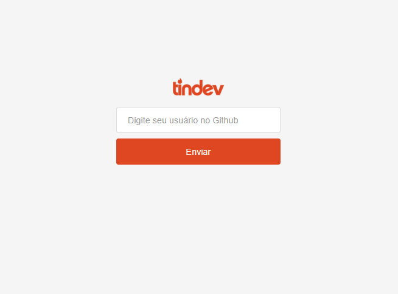

Sobre
Meu nome é Marco Túlio! Sou um cientista da computação graduado pela Universidade Federal de Ouro Preto (2016-2020). Atualmente, estou iniciando o meu Mestrado também na UFOP. Tenho experiência com desenvolvimento de aplicativos web e mobile, além de uma breve noção na área de aprendizado de máquina.
Portfolio
Omnistack Week #10

ReactJS, React Native, NodeJS, Javascript
Aplicação desenvolvida em um curso online de duração de uma semana. Nesta aplicação é implementada uma espécie de listagem de desenvolvedores. Na página da web são exibidos usuários cadastrados nas proximidades, fazendo o uso de geolocalização. No aplicativo, desenvolvido em React Native, é possível visualizar as localizações em um mapa e acessar o perfil do Github dos usuários próximos. Repositório
clique aqui.
Pokedéx JS

ReactJS, NodeJS, MongoDB, Bootstrap, Javascript
Aplicação web desenvolvida para a disciplina de Gerência de Dados da Web, na universidade. Esta aplicação é basicamente um repositório de buscas de dados sobre Pokémon. Todos os dados presentes nas páginas são extraídos e atualizados a partir de outras páginas da web de forma automática. Também foi implementado um mecanismo de armazenamento que funciona como uma espécie de cache temporário, para evitar repetidas requisições similares nas mesmas páginas. Repositório
clique aqui.
Arclass Website

ReactJS, Javascript
Protótipo de website desenvolvido para uma apresentação da disciplina de Empreendedorismo, na universidade. A idéia desse protótipo era apresentar um "produto", que no caso era um marketplace de modelos 3D para sua utilização com tecnologia de realidade aumentada. Por se tratar apenas de um protótipo, apenas a interface foi implementada, sem qualquer funcionalidade real. Repositório
clique aqui.
Omnistack Week #8

ReactJS, MongoDB, NodeJS, Javascript
Aplicação desenvolvida em um curso online de duração de uma semana. Esta aplicação é uma pequena rede social baseada no Tinder, voltada para desenvolvedores. Neste caso, o usuário deve inserir o seu perfil do Github para realizar o cadastro. A partir disso será exibida uma outra página onde são outros usuários cadastrados. É possível curtir ou descurtir outros desenvolvedores e caso haja um "match", é exibida uma janela informativa em tempo real. Repositório
clique aqui.
MyAnimelistSongs
NodeJS, Javascript
Este é um script feito em NodeJS para se montar uma lista de todas as músicas de abertura e encerramento de animações assitidas. A partir de um nome de perfil do MyAnimeList, é realizada a extração na web dos nomes dessas músicas de todos as animações adicionadas ao perfil.Repositório
clique aqui.
Uri Online Judge
C++, Haskell, Python
Este é um repositório onde guardo as minhas soluções submetidas no site UriOnlineJudge. Este site contém diversos problemas de programação para serem resolvidos. Repositório
clique aqui.
Firefighter Problem
Python
Esta é uma ferramenta desenvolvida para a disciplina Otimização em Redes, na universidade. A partir de instâncias pré-definidas, a ferramenta deverá encontrar uma solução para o problema de brigadistas em grafos. O enunciado é explicado mais detalhadamente no "readme" do repositório. Repositório
clique aqui.
Administração de repúblicas
Django, Python
Este é um website desenvolvido para a disciplina de Programação Web, na Universidade. Participou também do projeto
Layla Miranda. O objetivo do projeto era implementar um website que funcionasse como um anúncio para república, mas que também controlasse necessidades da casa como, por exemplo, a divisão das contas. Repositório
clique aqui.
Contato